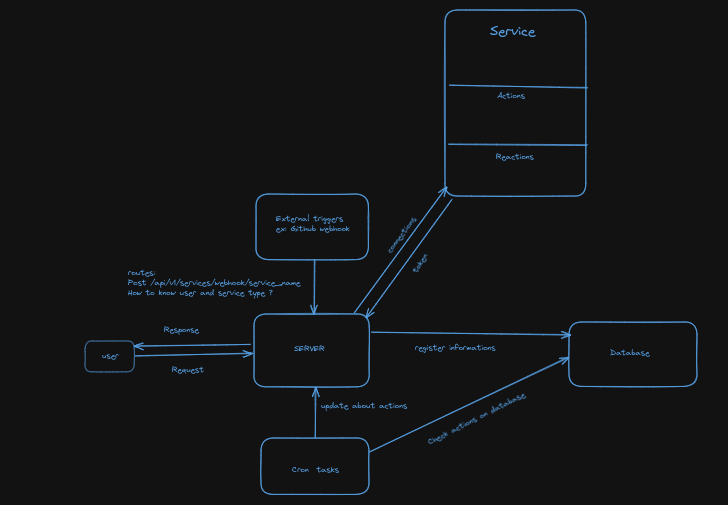
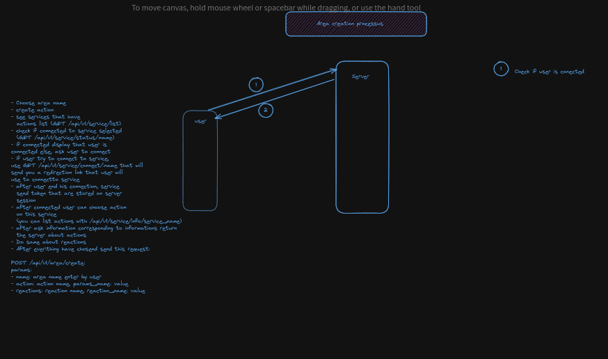
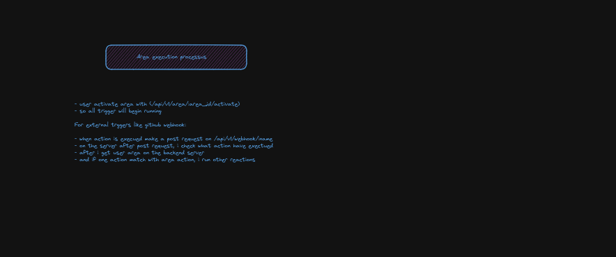

Overall Project Architecture
As mentioned above, the project is divided into three parts. We have:
- the Server part
- the Customer part Web rating
- the Customer part Mobile rating
The Web/Mobile client is only responsible for displaying screens and transmitting user requests to the application server.
Brief explanation of the diagrams below:
First we have a Server which is linked to a database. This same Server contains the implementation of certain services such as (Gitlab, Github, etc.). When we take a service it contains a certain number of actions and reactions.
The connection to a service is done from the server and then the token is retrieved.
The client (Web/Mobile) makes route tracking requests in order to get a given response.
The database contains different information about the customer (Web/Mobile).
We have a Cron tasks which checks the actions on the database.


